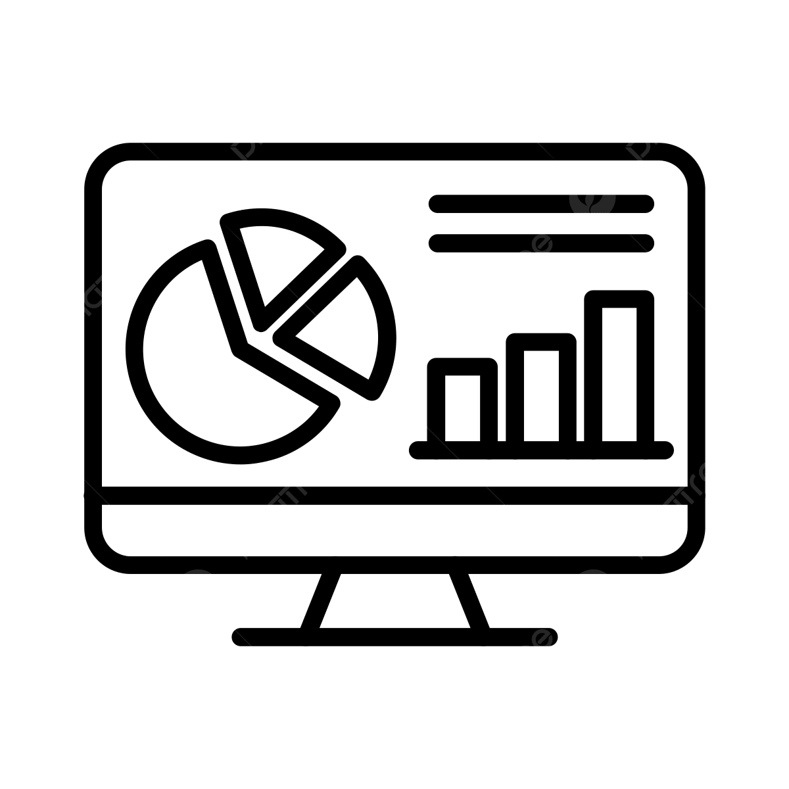

Quick Access
Navigate easily to your tools and dashboard.

Dashboard
View your activity overview, stats, and notifications all in one place.
Go to DashboardFood Inventory
Track your food items, monitor expiration dates, and get smart recommendations.
Manage InventoryBrowse Food Items
Search and filter through food items, find recipes, and discover new ingredients.
Explore Foods